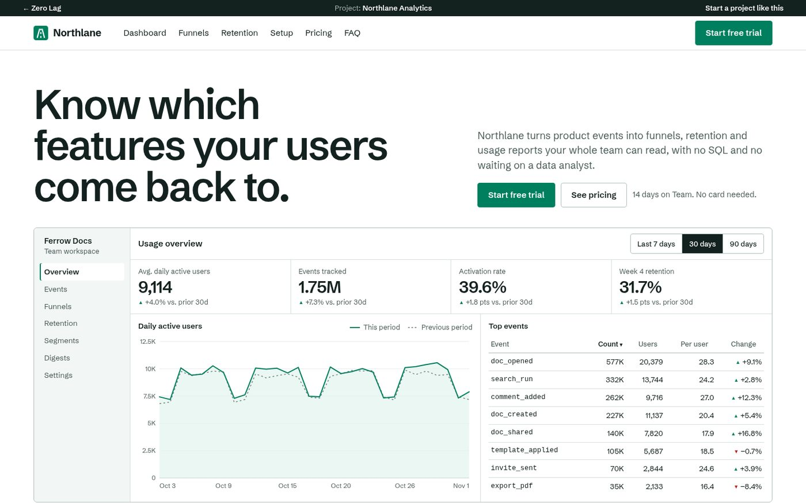
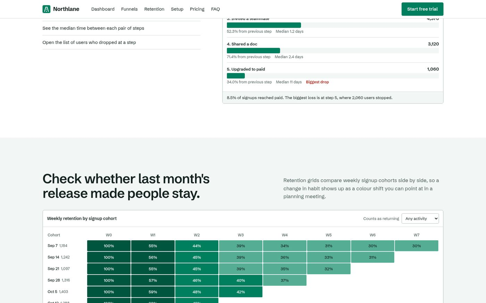
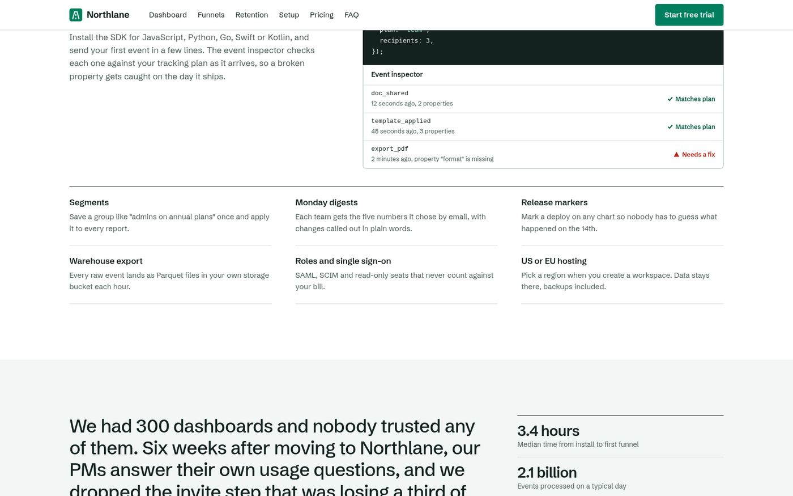
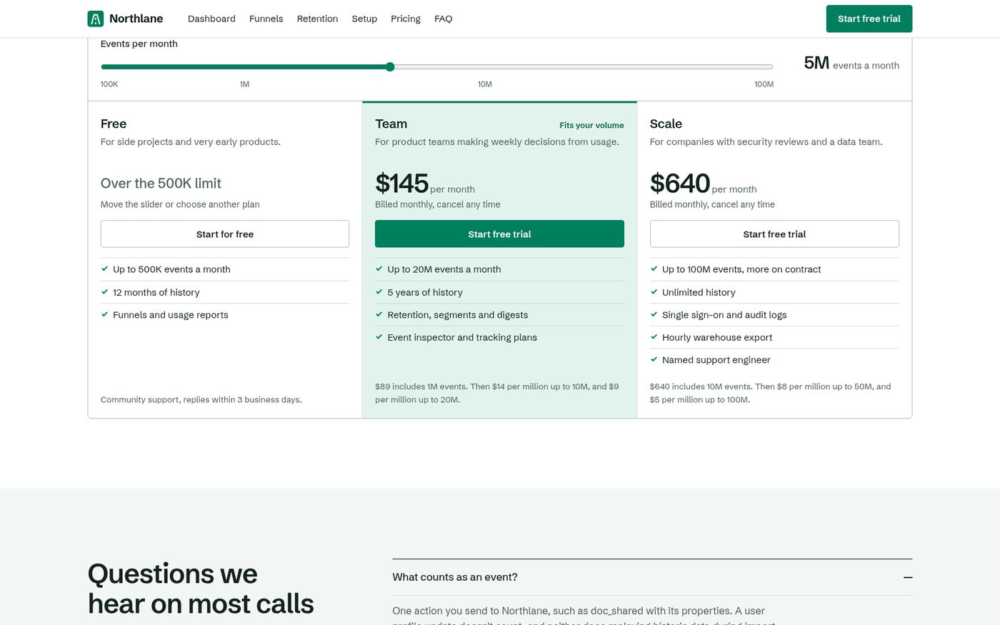
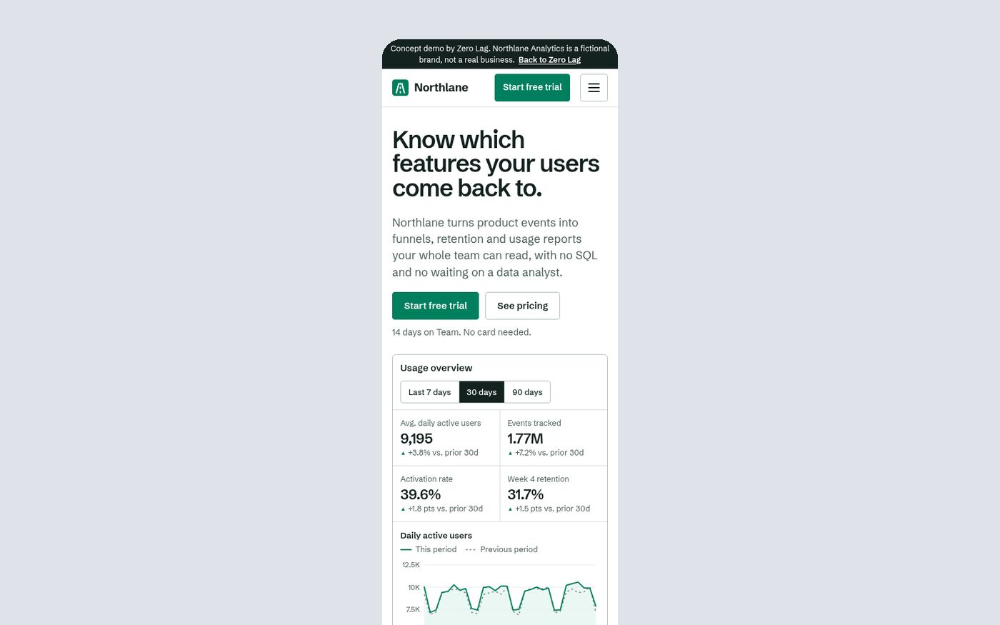

SaaS project
Northlane Analytics
A marketing site for an analytics platform, built to explain a technical product clearly and move visitors toward signing up.

Overview
Northlane Analytics is a SaaS product for tracking product usage data. The site needed to explain a fairly technical product to two different audiences — technical evaluators and business decision-makers — without alienating either.
Challenge
SaaS marketing sites often default to vague feature lists that fail to communicate real value, or dense technical copy that loses non-technical stakeholders. Northlane needed a middle path: concrete, benefit-led messaging backed by product detail for those who want it.
Strategy
We structured the homepage around a small set of core jobs the product does, each paired with a visual product preview, and pushed deeper technical detail into secondary pages rather than the primary conversion path.
Design
The interface uses a clean, data-forward visual language — structured layouts, clear typographic hierarchy, and dashboard preview sections that make the product feel tangible rather than abstract.
Development
Built with React on the frontend and a lightweight Node.js API layer, the site was structured for fast iteration — the marketing team can update copy and sections without developer involvement for most changes.
- Conversion-focused landing page sections
- Interactive dashboard preview components
- Clear, low-friction sign-up flow
- Componentized sections for fast content iteration
- Fast page loads on marketing-critical pages
- Accessible form and navigation patterns
Responsive Experience
Dashboard previews and comparison tables were redesigned for mobile rather than simply scaled down, so the product still feels legible and credible on a phone screen.
Outcome
The site gives Northlane a clearer, more credible way to introduce the product to new visitors, with a sign-up path that's easy to find from any section of the page.




Building a product that needs a website that keeps up?
We'd be glad to talk through what a clear, conversion-focused marketing site could look like for your SaaS product.